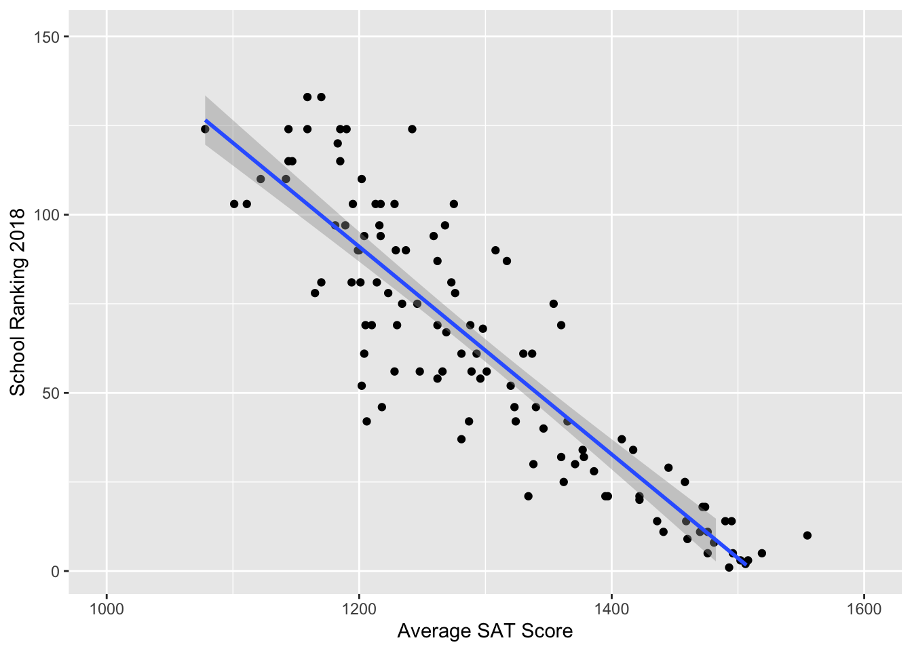
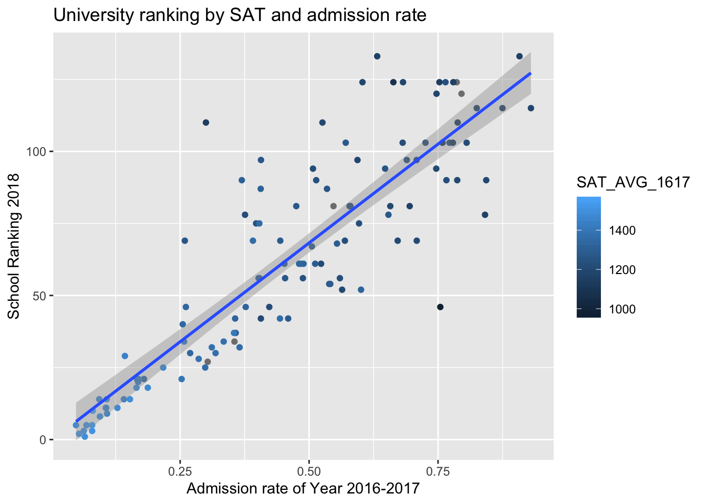

Chapter 6 Bayesian Models Part 1.1 University
How will we simulate what we want to know?
HINT: Start SIMPLE
6.1 Model 0
Ranking by one year of SAT score: with intuition from \(\text{hist}(\sqrt{1/rgamma(10000,a,b)})\).
6.1.1 First Impression
ggplot(fullUniversity, aes(x = SAT_AVG_1617, y = as.numeric(Y2018))) +
geom_point() +
geom_smooth(method = "lm") +
xlim(1000,1600) +
ylim(1,150) +
xlab("Average SAT Score") +
ylab("School Ranking 2018")## Warning: Removed 7 rows containing non-finite values (stat_smooth).## Warning: Removed 7 rows containing missing values (geom_point).## Warning: Removed 8 rows containing missing values (geom_smooth).
It appears to be a linear relationship!
6.1.2 Building the model
# DEFINE the model
university_model_0 <- "model{
for(i in 1:length(y)) {
# Data model
y[i] ~ dnorm(beta0 + beta1 * x[i], tau0)
}
# Priors for theta
beta0 ~ dnorm(300,1/250000)
beta1 ~ dnorm(0, 1/100)
tau0 ~ dgamma(7,4000)
}"
# COMPILE the model
model_data0 <- data.frame(y = fullUniversity$Y2018, x = fullUniversity$SAT_AVG_1617)
model_data0 <- na.omit(model_data0)
university_jags_0 <- jags.model(textConnection(university_model_0),
data = list(y = model_data0$y, x = model_data0$x),
inits = list(.RNG.name = "base::Wichmann-Hill", .RNG.seed = 454))## Compiling model graph
## Resolving undeclared variables
## Allocating nodes
## Graph information:
## Observed stochastic nodes: 114
## Unobserved stochastic nodes: 3
## Total graph size: 440
##
## Initializing model# SIMULATE the model
university_sim_0 <- coda.samples(university_jags_0,
variable.names = c("beta0", "beta1", "tau0"),
n.iter = 10000)
# STORE the chains in a data frame
university_chains_0 <- data.frame(university_sim_0[[1]])6.1.3 Model summary
summary(university_sim_0)##
## Iterations = 1:10000
## Thinning interval = 1
## Number of chains = 1
## Sample size per chain = 10000
##
## 1. Empirical mean and standard deviation for each variable,
## plus standard error of the mean:
##
## Mean SD Naive SE Time-series SE
## beta0 403.411563 3.227e+01 3.227e-01 4.714e+00
## beta1 -0.263423 2.472e-02 2.472e-04 3.617e-03
## tau0 0.002421 3.279e-04 3.279e-06 1.303e-05
##
## 2. Quantiles for each variable:
##
## 2.5% 25% 50% 75% 97.5%
## beta0 355.59133 390.793008 405.743679 421.198553 447.191343
## beta1 -0.29699 -0.277127 -0.265219 -0.253713 -0.226779
## tau0 0.00182 0.002212 0.002415 0.002628 0.0030626.1.4 Posterior inference
For an unknown university with a mean student SAT score of 1450 (e.g. Bvictor University), we could predict its ranking from our rjags simulation.
university_chains_0 <- university_chains_0 %>%
mutate(ranking_new = rnorm(10000, mean = beta0 + beta1*1450, sd = (1/tau0)^(1/2)))university_chains_0 %>%
summarize(quantile(ranking_new,0.025),quantile(ranking_new,0.975))## quantile(ranking_new, 0.025) quantile(ranking_new, 0.975)
## 1 -19.44004 62.43218A \(95\%\) credible interval is \((-20,62)\). Due to restrictions of this one-predictor model, we expect to see an improvement in later models.
6.2 Model 1
Ranking by three years of SAT score. By analysis, the three predictors are multicollinear, meaning that this may not be a significantly better model than Model 0.
6.2.1 First Impression
It’s harder to make predictions (and as it turns out, hard to make visualizations as well) with three years’ SAT score in the same linear model, as we can foresee significant multicollinearity. This is clearly seen that the coefficient for SAT average of Year 2014-15 (SAT_AVG_1415) variable is positive, meaning that school ranking worsens as the average SAT score increases.
To further test our thinking, we created a linear model university_linear_1. From the ANOVA summary, we see that any one of these variables should be sufficient.
university_linear_1 <- lm(as.numeric(Y2018) ~ SAT_AVG_1617 + SAT_AVG_1516 + SAT_AVG_1415, fullUniversity)
summary(university_linear_1)##
## Call:
## lm(formula = as.numeric(Y2018) ~ SAT_AVG_1617 + SAT_AVG_1516 +
## SAT_AVG_1415, data = fullUniversity)
##
## Residuals:
## Min 1Q Median 3Q Max
## -104.127 -8.988 -2.062 12.129 38.789
##
## Coefficients:
## Estimate Std. Error t value Pr(>|t|)
## (Intercept) 415.49873 20.70087 20.072 <2e-16 ***
## SAT_AVG_1617 -0.04769 0.14485 -0.329 0.743
## SAT_AVG_1516 -0.26890 0.18977 -1.417 0.159
## SAT_AVG_1415 0.04301 0.16163 0.266 0.791
## ---
## Signif. codes: 0 '***' 0.001 '**' 0.01 '*' 0.05 '.' 0.1 ' ' 1
##
## Residual standard error: 19.68 on 110 degrees of freedom
## (6 observations deleted due to missingness)
## Multiple R-squared: 0.7292, Adjusted R-squared: 0.7218
## F-statistic: 98.75 on 3 and 110 DF, p-value: < 2.2e-16anova(university_linear_1)## Analysis of Variance Table
##
## Response: as.numeric(Y2018)
## Df Sum Sq Mean Sq F value Pr(>F)
## SAT_AVG_1617 1 113627 113627 293.4484 <2e-16 ***
## SAT_AVG_1516 1 1052 1052 2.7173 0.1021
## SAT_AVG_1415 1 27 27 0.0708 0.7907
## Residuals 110 42594 387
## ---
## Signif. codes: 0 '***' 0.001 '**' 0.01 '*' 0.05 '.' 0.1 ' ' 1For the sake of scientific experiment (and to catch the audience’s interest), we still did a Bayesian model and Bayesian posterior inference. We found out that this model does a slightly better job at predicting college rankings (by eliminating negative rankings) because it naturally contains more information as we increase the number of predictors. The change is not significant enough to call it an improvement.
6.2.2 Building the model
university_model_1 <- "model{
# Data: observations
for(i in 1:length(y)) {
y[i] ~ dnorm(beta0 + beta1*x1[i] + beta2*x2[i] + beta3*x3[i], tau_big)
}
# Data: subjects
beta0 ~ dnorm(0,1/250000)
beta1 ~ dnorm(0,100)
beta2 ~ dnorm(0,100)
beta3 ~ dnorm(0,100)
tau_big ~ dgamma(7,1000)
}"
# COMPILE
y <- fullUniversity$Y2018
model_data1 <- as.data.frame(cbind(y, x1 = fullUniversity$SAT_AVG_1415, x2 = fullUniversity$SAT_AVG_1516, x3 = fullUniversity$SAT_AVG_1617))
model_data1 <- na.omit(model_data1)
university_jags_1 <- jags.model(textConnection(university_model_1),
data = list(y = model_data1$y, x1 = model_data1$x1, x2 = model_data1$x2, x3 = model_data1$x3),
inits=list(.RNG.name = "base::Wichmann-Hill", .RNG.seed = 454))## Compiling model graph
## Resolving undeclared variables
## Allocating nodes
## Graph information:
## Observed stochastic nodes: 114
## Unobserved stochastic nodes: 5
## Total graph size: 876
##
## Initializing model# SIMULATE the model
university_sim_1 <- coda.samples(university_jags_1,
variable.names = c("beta0","beta1","beta2","beta3","tau_big"),
n.iter = 10000)
# STORE the chains in a data frame
university_chains_1 <- data.frame(university_sim_1[[1]])6.2.3 Model summary
summary(university_sim_1)##
## Iterations = 1:10000
## Thinning interval = 1
## Number of chains = 1
## Sample size per chain = 10000
##
## 1. Empirical mean and standard deviation for each variable,
## plus standard error of the mean:
##
## Mean SD Naive SE Time-series SE
## beta0 409.864989 3.553e+01 3.553e-01 5.783e+00
## beta1 0.001373 1.078e-01 1.078e-03 1.120e-01
## beta2 -0.179656 7.938e-02 7.938e-04 4.684e-02
## beta3 -0.090932 7.417e-02 7.417e-04 5.086e-02
## tau_big 0.002781 4.008e-04 4.008e-06 2.714e-05
##
## 2. Quantiles for each variable:
##
## 2.5% 25% 50% 75% 97.5%
## beta0 345.977738 400.686962 414.807439 427.055384 447.427911
## beta1 -0.224077 -0.074142 0.033869 0.084271 0.127709
## beta2 -0.304552 -0.247353 -0.181364 -0.127231 -0.006660
## beta3 -0.212426 -0.151206 -0.106569 -0.025275 0.034454
## tau_big 0.002051 0.002538 0.002778 0.003029 0.0035566.2.4 Posterior inference
For an unknown university with three years’ mean student SAT score of 1450, 1440, 1420 (e.g. Cvictor University), we could predict its ranking from our rjags simulation.
university_chains_1 <- university_chains_1 %>%
mutate(ranking_new = rnorm(10000, mean = beta0 + beta1*1450 + beta2*1440 +beta3*1420, sd = (1/tau_big)^(1/2)))university_chains_1 %>%
summarize(quantile(ranking_new,0.025),quantile(ranking_new,0.975))## quantile(ranking_new, 0.025) quantile(ranking_new, 0.975)
## 1 -14.94068 63.7863A \(95\%\) credible interval is \((-14,64)\). The \(95\%\) credible interval in the new model does a better job at eliminating negative rankings, which are impossible in reality.
6.3 Model 2
2018 U.S. News Ranking by average SAT score and admissions rate of Year 2017.
6.3.1 First Impression
ggplot(fullUniversity, aes(x = ADM_RATE_1617, y = as.numeric(Y2018), color = SAT_AVG_1617)) +
geom_point() +
geom_smooth(method = "lm") +
xlab("Admission rate of Year 2016-2017") +
ylab("School Ranking 2018") +
ggtitle("University ranking by SAT and admission rate")
There’s a strong positive relationship between the admission rate of colleges and college ranking (a larger number in college ranking is worse). From color gradient of points, we can see that schools with higher SAT averages tend to be better ranked.
6.3.2 Building the model
6.3.2.1 Step 1
A linear model provides some intuition about how the priors might be constructed.
summary(lm(fullUniversity$Y2018 ~ fullUniversity$SAT_AVG_1617 + fullUniversity$ADM_RATE_1617))##
## Call:
## lm(formula = fullUniversity$Y2018 ~ fullUniversity$SAT_AVG_1617 +
## fullUniversity$ADM_RATE_1617)
##
## Residuals:
## Min 1Q Median 3Q Max
## -78.978 -9.142 -1.986 8.865 43.380
##
## Coefficients:
## Estimate Std. Error t value Pr(>|t|)
## (Intercept) 172.5262 45.1297 3.823 0.000218 ***
## fullUniversity$SAT_AVG_1617 -0.1150 0.0301 -3.822 0.000219 ***
## fullUniversity$ADM_RATE_1617 84.8854 14.8094 5.732 8.66e-08 ***
## ---
## Signif. codes: 0 '***' 0.001 '**' 0.01 '*' 0.05 '.' 0.1 ' ' 1
##
## Residual standard error: 17.42 on 111 degrees of freedom
## (6 observations deleted due to missingness)
## Multiple R-squared: 0.7858, Adjusted R-squared: 0.7819
## F-statistic: 203.6 on 2 and 111 DF, p-value: < 2.2e-166.3.2.2 Step 2
university_model_2 <- "model{
# Data: observations
for(i in 1:length(y)) {
y[i] ~ dnorm(beta0[i] + beta1[i]*x1[i] + beta2[i]*x2[i], tau_big[i])
# Data: subjects
beta0[i] ~ dnorm(b0, tau0)
beta1[i] ~ dnorm(b1,tau1)
beta2[i] ~ dnorm(b2,tau2)
tau_big[i] ~ dgamma(s,r)
}
# Hyperpriors
b0 ~ dnorm(180,1/4000)
tau0 ~ dnorm(30, 1/9)
b1 ~ dnorm(-0.1,1000)
tau1 ~ dnorm(1000,1000)
b2 ~ dnorm(80,1/100)
tau2 ~ dnorm(10,1)
s ~ dnorm(7,1)
r ~ dnorm(10000, 1/10000)
}"
# COMPILE
y <- fullUniversity$Y2018
model_data2 <- as.data.frame(cbind(y, x1 = fullUniversity$SAT_AVG_1617, x2 = fullUniversity$ADM_RATE_1617))
model_data2 <- na.omit(model_data2)
university_jags_2 <- jags.model(textConnection(university_model_2),
data = list(y = model_data2$y, x1 = model_data2$x1, x2 = model_data2$x2),
inits=list(.RNG.name = "base::Wichmann-Hill", .RNG.seed = 454))## Compiling model graph
## Resolving undeclared variables
## Allocating nodes
## Graph information:
## Observed stochastic nodes: 114
## Unobserved stochastic nodes: 464
## Total graph size: 1165
##
## Initializing model# SIMULATE the model
university_sim_2 <- coda.samples(university_jags_2,
variable.names = c("b0","tau0","b1","tau1","b2","tau2","s","r"),
n.iter = 10000)
# STORE the chains in a data frame
university_chains_2 <- data.frame(university_sim_2[[1]])6.3.3 Model summary
summary(university_sim_2)##
## Iterations = 1001:11000
## Thinning interval = 1
## Number of chains = 1
## Sample size per chain = 10000
##
## 1. Empirical mean and standard deviation for each variable,
## plus standard error of the mean:
##
## Mean SD Naive SE Time-series SE
## b0 181.003 0.866642 8.666e-03 0.4845152
## b1 -0.122 0.003986 3.986e-05 0.0001962
## b2 86.978 2.748797 2.749e-02 2.0167560
## r 9978.437 98.495695 9.850e-01 1.3555384
## s 9.367 0.854744 8.547e-03 0.0428560
## tau0 29.903 3.051727 3.052e-02 0.0544687
## tau1 1000.000 0.031393 3.139e-04 0.0003934
## tau2 10.021 1.000127 1.000e-02 0.0179231
##
## 2. Quantiles for each variable:
##
## 2.5% 25% 50% 75% 97.5%
## b0 179.2258 180.2942 181.163 181.6543 182.5227
## b1 -0.1298 -0.1247 -0.122 -0.1193 -0.1143
## b2 80.6675 85.0648 87.714 89.2203 90.5414
## r 9784.6197 9912.1376 9978.523 10044.9089 10170.4126
## s 7.7114 8.7880 9.345 9.9331 11.0906
## tau0 23.8816 27.8340 29.879 31.9392 35.9038
## tau1 999.9366 999.9792 1000.000 1000.0208 1000.0615
## tau2 8.0599 9.3477 10.030 10.6819 12.00066.3.4 Posterior inference
For an unknown university with student mean SAT score of 1450 and an admission rate of \(30\%\) (e.g. Dvictor University), we could predict its ranking from our rjags simulation.
university_chains_2 <- university_chains_2 %>%
mutate(beta0_new = rnorm(10000,b0,(1/tau0)^(1/2))) %>%
mutate(beta1_new = rnorm(10000,b1,(1/tau1)^(1/2))) %>%
mutate(beta2_new = rnorm(10000,b2,(1/tau2)^(1/2))) %>%
mutate(tau_big_new = rgamma(10000,s,r)) %>%
mutate(ranking_new = rnorm(10000, mean = beta0_new + beta1_new * 1450 + beta2_new * 0.3, sd = (1/tau_big_new)^(1/2)))university_chains_2 %>%
summarize(quantile(ranking_new,0.025),quantile(ranking_new,0.975))## quantile(ranking_new, 0.025) quantile(ranking_new, 0.975)
## 1 -83.12234 143.7414A \(95\%\) credible interval is \((-86,142)\). The \(95\%\) credible interval does a poor job at eliminating negative rankings or making an accurate prediction. We propose that this may be due to the variability of the priors and hyperpriors set in our Hierarchical Model.
6.4 Future steps
Next, we plan to incorporate more predictive variables of ranking \(y_i\). Since some predictors we choose are correlated, we will also emphasize on reflecting that in our models.